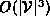

Data Structures and Algorithms
with Object-Oriented Design Patterns in C++
Data Structures and Algorithms
with Object-Oriented Design Patterns in C++
The worst-case running time for Floyd's algorithm is easily determined.
Creating and initializing the distance matrix is  (lines 6-9).
Transferring the weights from the input graph to the distance matrix
requires
(lines 6-9).
Transferring the weights from the input graph to the distance matrix
requires  time if adjacency lists are used,
and
time if adjacency lists are used,
and  time when an adjacency matrix is used to represent
the input graph (lines 10-19).
time when an adjacency matrix is used to represent
the input graph (lines 10-19).
The running time for the three nested loops
is  in the worst case.
Finally, constructing the result graph
and transferring the entries from the distance matrix
to the result requires  time.
As a result, the worst-case running time of Floyd's algorithm
is .
time.
As a result, the worst-case running time of Floyd's algorithm
is .
 Copyright © 1997 by Bruno R. Preiss, P.Eng. All rights reserved.
Copyright © 1997 by Bruno R. Preiss, P.Eng. All rights reserved.